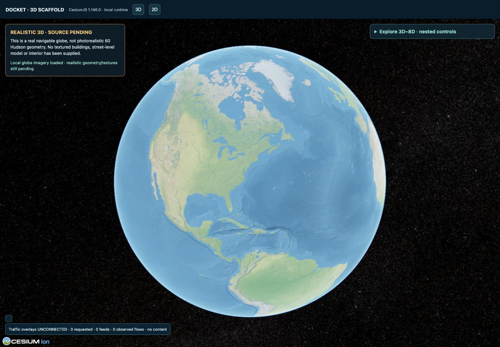
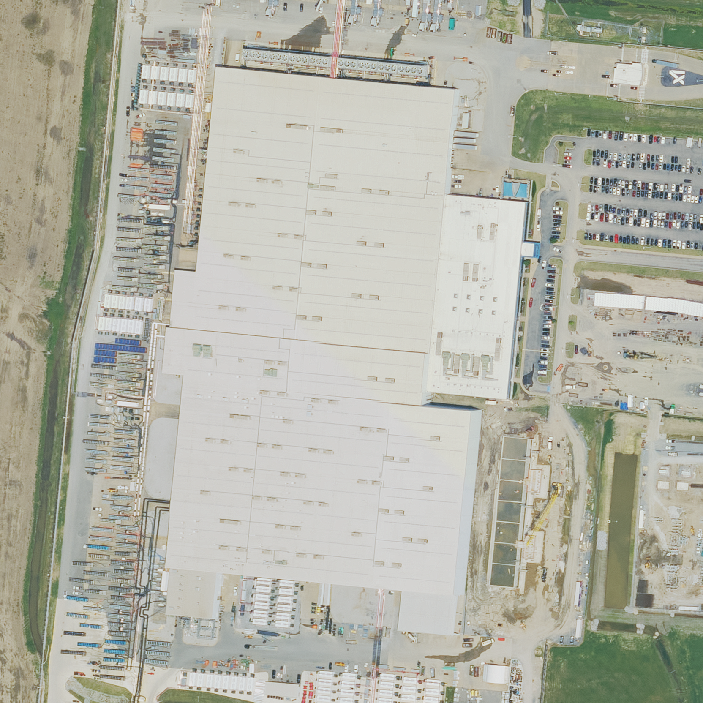

Daniel Buk · Data Center DocketResearch Blueprint · Interactive Examples
Public Records, Worker Power And Infrastructure
A Promise. A Place. A Record You Can Follow.
Infrastructure changes raise practical questions about who benefits, whose work changes and who gets a say. This blueprint connects two documented cases: Los Angeles Alliance for a New Economy (LAANE)’s Sunset/Western Target appeal and the Memphis questions in Aiha Nguyen and Alexandra Mateescu’s Generative AI and Labor. Explore the places, follow the decisions and open the records behind each claim.
Fully Interactive App · In Development
You Control The Exploration.
I’m building Docket as a fully interactive research workspace that you can explore for yourself. The intended experience puts you in control: choose a place, zoom from the wider region down to streets and buildings, switch connected 3D–8D layers: place, time, costs, environment, dependencies and decision rights, move through the timeline, and open the evidence behind a claim. Follow your own questions and move between views as the workspace responds to your input in real time.
This page previews that experience. Its clickable examples illustrate the approach; the full connected app is still in development. Real-time interaction means responsive navigation, not live data feeds: imagery and records keep their source dates.
Start Here · The Wider Project
One Project. Two Ways To Explore It.
This blueprint shows one research path through Data Center Docket. The main project brings together the broader questions, source guides, development notes and code.
Actual Earlier Prototype · Screenshots, Not A Live Embedded Globe
The Visual Work Behind The Blueprint.
Working Interaction · Illustrative Diagram
Try A Segment Drilldown
This small working example shows the navigation pattern: select a segment, inspect its evidence status, then return. It is not the historical globe, a geographic map or observed traffic.
Overview: select the segment to focus the diagram.
Selected Segment: Evidence Status
Source And Observation
This diagram was created solely to demonstrate selection and return navigation. It has no measured flows, attributed buildings, real endpoints or route evidence.
What A Researcher Would Check
A qualified app view would retain source, observation time, collection scope, attribution evidence and uncertainty before connecting a network observation to a facility or institution.
These are captures of an earlier working Docket prototype. It used CesiumJS, a browser-based 3D globe engine, with local global imagery, camera navigation and nested controls. The second view shows a deliberately synthetic segment used to test drilldown and returning to the previous camera position.
Static Screenshot · The controls pictured inside this image do not respond. Use the working example above to try selecting a segment and returning.
Historical Screenshot · Pictured Controls Are Not Live

Historical screenshot: a real navigable globe prototype with global imagery. It is not a textured Memphis or Hudson building model. Traffic feeds were unconnected.
Recorded testing: the October 14, 2026 browser receipt for this earlier build records 30 passing checks, including camera movement, 2D/3D switching, nested disclosures and synthetic drilldown/Back behavior. That is version-specific historical evidence, not a fresh qualification of this page or a claim of real traffic observations. This historical gallery displays screenshots only; the separate illustrative diagram above has working controls.
Jobs And Changing Land Use
Question: whose work changes? Move from a site and dated imagery to the Silver Creek proposal comparison, then check hiring evidence and conditions. A building view cannot establish job quality or layoffs.
Question: who controls a dependency? A prospective network view must separate an observation from an inferred relationship, then attach source, time and corroboration before asking who maintains or pays for it.
Question: what can change? Follow a source or model discrepancy into a decision, condition and unresolved outcome. Keep the authority to challenge or remedy separate from visibility on a map.
This is a proposed fit with the published research, not a claim about the team’s internal tools or an agreed workflow. The map should help carry a question through place → observation → corroboration → decision → worker consequences, with missing evidence visible at every step.
Start with the real Memphis aerial. Select a layer to see which question it brings into view, then open the image source. The design carries the same question from a global view down to streets, poles and buildings; this preview demonstrates the aerial crop and layer explanations, not a rendered 3D scene. What do 3D–8D layers mean? Read the plain-language key.
Context: Memphis / xAI Colossus research candidate · Question: promises, responsibilities and outcomes · Image capture: June 10, 2025
This preview supports the dated aerial and a closer crop only. Global, regional and street/pole views are not available here. They remain part of the intended app’s full navigation scope; these unavailable controls do not open a view.

USDA NAIP · JUNE 10, 2025 · DATED AERIAL, NOT LIVE 3D
Source-image view. Zooming is an image crop, not a rendered 3D globe or a new observation.
Source Drawer · Capture, Origin And Limits
Source: USDA National Agriculture Imagery Program (NAIP), raster records 160774 / 160776. Capture: June 10, 2025. Candidate overhead export: 1664 × 1664 resampled pixels, EPSG:3857 (the image’s map-coordinate system). This higher-resolution export covers the same extent as the earlier 768 × 768 image. It uses bilinear resampling and reprojection, not native-pixel preservation. Zoom crops the export; it does not supply street-level imagery, heights or a verified 3D scene. Credit: USDA FPAC-BC-GEO / NAIP. Collection catalog identifies public-domain access; exact service terms are not established. Illustrative purposes, not surveying or engineering. Limits: no current-condition verification, surveyed heights, operating status or traffic inferred from the image. Geographic/site/phase binding remains candidate, not accepted evidence.
Selected Layer
3D · Place
Proposed interactionNo live observations
Global view → region → neighborhood → streets, buildings and poles is the intended navigation scope. Closest-possible real images and video, with inspectable provenance, are preferred to invented scenery. The available source view is a dated aerial. Offline terrain preparation is not yet rendered or geographically qualified; nine inferred-height footprints are incomplete, not measured or textured building models.
This preview links image crops and layer explanations. It does not render a verified geospatial model, reveal real infrastructure connections or show observed traffic. Street/pole/building captures, real 3D, offline terrain alignment and traffic remain unverified. The numbered layers draw on building information modeling (BIM): connecting a spatial model with information such as time, costs and operations. Read how the established terminology relates to this blueprint.
Network View · Interaction Concept, Not Observed Traffic
A Building Is A Point Of Inquiry, Not A Black Box.
Choose a direction to see what the intended traffic view would distinguish. This diagram is schematic and unmeasured: its generic nodes are not Memphis buildings, cables, providers or real routes. It demonstrates a way to ask questions, not a network discovered at Colossus.
Working Explorer · Synthetic Logical Relationships
Follow A Direction. Open A Segment. Inspect Its Evidence.
Try the interaction the intended network view needs: choose a direction, then use the Inspect Inbound, Outbound or Transit Segment buttons below the diagram to open its evidence. The drawn lines are not clickable. Inspect the source and authority required to support each relationship. These generic endpoints and links are test fixtures, not Memphis sites, discovered routes or traffic measurements. Line thickness has no quantitative meaning.
No Observed Traffic Is Connected. Rates, volumes, protocols and real building attribution are unknown. Unknown is not zero.
Overview: three illustrative direction patterns. Select a segment to inspect it.
On a small screen, swipe horizontally to explore the whole diagram. Keyboard users can focus the diagram region and use the left and right arrow keys. The Inspect buttons remain below.
Selected Segment
Observation And Measurement
No observation is supplied. Measurement time, rate, volume and protocol category are unknown. This interaction demonstrates inspection, not network discovery.
Facility Attribution And Route
No facility, provider, cable or endpoint has been attributed. A nearby line, public routing record or company name does not prove that traffic enters this building. Transit requires evidence of continuity, not just two arrows.
Source Registry And Collection Authority
Public routing / ASN observations: unconnected; not payload traffic or exact fiber routes.
Public latency / reachability: unconnected; no probe or scan starts here.
Authorized operator protocol aggregates: unconnected; no packet contents supplied.
Authorized aggregate flow volumes: unconnected; no building-level flow measurements supplied.
Authorized equipment telemetry: unconnected; no counters or collection credentials supplied.
This is the source-category registry recovered from the earlier prototype, not five active feeds. Collection and building attribution require separate evidence and permission.
Research Question, Responsibility And Remedy
Once a relationship is supported, ask who operates and maintains it, who depends on it, who bears disruption costs, and who can challenge or remedy a decision. Visibility alone does not establish worker authority.
This optional primer explains the three directions separately. Its selection does not control the network explorer above.
Inbound: What Arrives?
A future qualified view would distinguish traffic arriving at a selected building from traffic merely nearby. Building attribution, lawful availability, source time and measurement scope would need evidence.
Available measurements: none in this preview. Rate, volume and routes: unknown, not zero.
1 · Establish The Place
Identify the building and time period. A public record or nearby cable does not establish a traffic path.
Full scope retained: building-level inbound, outbound and transit detail, connected with the 3D–8D layers and global-to-street/pole/building navigation. Real imagery, geometry, measurements and source-backed connections remain open work. The schematic is not a substitute for those requirements.
3D–8D Explained: Place, Time, Costs, Environment, Dependencies And Decision Rights
The language comes from building information modeling (BIM), which connects a digital representation of a place or asset with information used through its life. Autodesk’s BIM explainer describes 3D space, 4D time, 5D costs, 6D sustainability and 7D maintenance. NBS explains why the higher-numbered labels vary across practitioners. Docket applies and extends this vocabulary to public-record research, including safety and decision rights in 8D. The plain-language names below explain the intended content of each layer.
Read the map as a set of connected research questions. Here is what each numbered layer covers in this blueprint. The labels below describe the planned workspace, not six completed features.
What do records say about power, water, emissions and community impacts? Keep measurements separate from estimates and permissions. Explore the power and pollution questions.
7D · Maintenance & Dependencies
What must keep working, and who maintains it? Follow ownership, equipment, services, skills, dependencies and alternatives behind a facility. See the workflow guides.
8D · Safety & Decision Rights
Who can authorize, refuse, challenge or correct a decision? Keep worker safety, privacy, protections, rights, accountability and routes to remedy visible. Read the worker-control research.
Prologis’s data-center development and Amazon’s logistics footprint provide distinct starting points for a shared research question: how do changes in industrial land use change the promises made to workers and communities?
COMPANY RECORD
Prologis: Logistics And Data Centers
Its Q3 2026 supplement lists Amazon among its portfolio customers and describes a data-center pipeline. Those are company-level facts, not evidence that Amazon occupies a particular Memphis property or is undergoing an internal reorganization.
The Memphis Chamber announced a proposed same-day delivery station at 4131 Clarke Road, expected in late 2027. It gives us a specific place to follow a jobs promise. It is a logistics proposal, not an Amazon Web Services (AWS) or Colossus data center.
Follow-up worth doing: identify the parcel, owner, approvals and any selected use before comparing job or power commitments. A marketed option is not a permitted or operating data center. Amazon’s proximity does not establish tenancy, a cloud contract or shared employment.
What the records do not connect: I have not established that Prologis owns or leases the Clarke Road station. The Olive Branch marketing is not title or tenancy evidence, and neither lead establishes a connection to xAI’s Colossus property. Memphis gives us a geographic comparison, not proof of a shared landlord, operator or workforce.
That distinction is the point of the workflow below: keep the site, landlord, operator, employer and date visible while following what was promised, what was authorized and what still needs evidence.
A next question to investigate: which commitments changed, when, and what records show who bears the costs? Reported supply still does not establish measured consumption or community outcomes.
From A Target Concern To An Obligation You Can Check
Documented advocacy: the LAANE appeal puts development and labor concerns in the public record.
The connected records: counsel’s proposed 10% restriction, Condition 135 and the later council action make the wording and decision traceable.
A next question to investigate: was the required diagram submitted, and was the condition met? That needs compliance evidence beyond the decision itself.
These examples connect records across time; they do not establish that the underlying questions or sources are new to the researchers. The source cards work in this preview. Automated comparison, annotation and integrated 3D remain development work.
Beyond The Map · Follow The Evidence
From A Research Question To A Brief Others Can Check
The map is one way into the work. The deeper aim is to keep a claim connected to its original record, preserve disagreement and make the next research step clear. These parts of the public code show how that approach is taking shape.
1. Can We Trace The Claim Back To The Exact Record?
Docket’s candidate-packet component for New York State Department of Environmental Conservation (NYSDEC) permit records uses the agency’s DEC Permit Applications (DART) Search as its specific source context. The component records an artifact’s SHA-256 fingerprint and byte count, retains source and retrieval references, and preserves conflicting variants rather than silently choosing one. It also tracks independent origins: two copies of one institution’s statement are not two independent sources.
Research use: apply this source-tracing approach to comparisons of job promises, permits or power statements without losing which version supports each claim. That broader application remains proposed. The public facility-review rule still requires two eligible, institutionally independent official acts about the same proposition, site and phase, followed by human review.
Status: code is present; this review did not rerun its tests or verify an integrated live record-processing service.
2. Are We Talking About The Same Company, Site And Role?
The entity-resolution design documents how company identifiers, aliases and conflicting matches can be reviewed without automatically merging ambiguous records. A company name alone does not establish who owns a building, operates a service or employs its workers.
Research use: keep those roles distinct while following the obligations and decisions that connect them. This is particularly important when comparing logistics and data-center developments, where a neighboring company or shared name is not proof of a relationship.
Status: documented prototype work, not a complete live identity service. The notes identify unconnected sources and gaps in historical corporate changes.
3. Can A Colleague Check The Evidence And Continue The Inquiry?
The reviewer-brief component includes overview, evidence, audit and follow-up views, source links and a copyable brief. It is designed to carry the record trail into a discussion rather than leave the reader with a map alone.
Research use: bring the evidence, unresolved questions and next steps into a review with colleagues. A brief can organize an inquiry; it does not itself settle a contested claim or give affected workers decision-making power.
Status: component code is present; its current runtime and integration were not tested in this review. The legacy component can display demo or manually supplied data and methodological scores, not legal or compliance findings. The controls on this blueprint are separate demonstrations.
The full interactive geospatial and per-building traffic goals remain in scope. These evidence tools complement that vision; they do not replace the missing real-world imagery, qualified traffic observations or integrated application.
The Wider Research Behind This View
Follow The Asset. Follow The Obligations. Keep People In The Picture.
The Memphis and Target examples sit within a broader inquiry into land, work and control over infrastructure. The research below connects public records with questions already developed in Data & Society’s work: how industrial land changes, how services organize work, and whether access to information gives people any power to act.
A proposed analytical chain, not a completed automated system. Each connection needs its own source, date and scope. An owner, operator, employer, interface controller, maintainer and recipient of recurring income may be different parties.
What Changes When Land Changes Purpose?Silver Creek: Compare Two Proposals Without Inventing Lost Jobs.
Research connection.Kneese and Marrinan’s California research connects warehouse environmental-justice histories with the repurposing of industrial sites. A property-specific comparison makes that inquiry concrete.
Record comparison. The 2022 Silver Creek warehouse notice anticipated about 195 workers once occupied. The 2026 Prologis data-center application describes the same site as undeveloped and forecasts a maximum of 45 employees. These are different development forecasts, not observed layoffs or a measured employment loss.
What Docket would connect. The parcel, proposal versions, job categories, power and water assumptions, decision stages and public commitments. The useful question is which benefits were promised under each land use, to whom, and with what enforceable conditions.
Keep distinct: construction work, permanent jobs, contract work and actual hiring. This is a researched comparison, not an ingested live dataset or evidence that Prologis and Amazon share this project.
Who Controls The Service, Does The Work And Bears The Risk?Go Beyond The Owner’s Name To Maintenance, Contracts And Workable Alternatives.
The analytical extension. Follow a physical asset into its service and interface dependencies; then distinguish ownership, licensing control, recurring income, employment, maintenance and liability. Check the contracts and applicable rules to establish who bears costs when a service fails. Neither proximity nor a vendor logo supplies that answer.
What Docket would connect. Funded maintainers, paid skills, access to parts and documentation, repair or replacement assumptions, and alternatives that could actually work. Interoperability means systems can exchange and use information; it does not by itself prove that someone can switch providers or maintain a replacement.
A practical test: what would it take to repair, switch, interconnect or exit, who can authorize it, how long would recovery take, and who bears the transition costs? A financial payout is not replacement computing capacity. Worker time, retraining and lost income belong in the comparison, alongside energy, water and material consequences.
Status: this is the broader research model and proposed workflow, not a verified maintenance service, financial product or finding that one option is cheaper or safer. See the linked 5D–8D explanations.
When Can Evidence Change A Decision?Inyokern And Target: Preserve Disputed Inputs, Decision Stages And Unresolved Follow-Through.
Research connection. The LAANE Target appeal demonstrates a documented intervention; the condition trail lets a reader inspect what followed without claiming compliance.
A second record trail. In its November 4, 2026 Inyokern comments, the California Department of Transportation identifies a mismatch between the application’s 238,000-square-foot building footprint and the traffic analysis’s 270,218-square-foot input. It also questions a generalized road-capacity benchmark. Those are attributed agency comments, not a finding that the model is fraudulent or the project unlawful.
What Docket would connect. Input versions, source passages, an agency’s challenge, any revised analysis and the eventual decision. The preparation notice identifies a November 5–December 4, 2026 review period. That is a dated record, not a live deadline service; the current docket must be checked before acting.
Keep distinct: identifying a discrepancy, correcting a record, reconsidering a decision and achieving an outcome. The proposed view would preserve each step instead of collapsing them into “resolved.”
What Turns Visibility Into Worker Power?Information, Participation And Authority Are Not Interchangeable.
A concrete governance comparison. The American Association of University Professors’ report calls for participation before and during technology use, correction of data and adjustment of affected decisions, protection from retaliation, and ways to challenge or renegotiate harmful systems. These are recommendations, not rights we can assume exist at a particular workplace.
What Docket would connect. Who may inspect or correct a record; who can pause, refuse, renegotiate or exit; what collective process applies; who funds participation; and what remedy can be enforced. Public evidence can support that work, but a dashboard does not confer decision authority.
Two different responsibilities. Public-record research makes claims inspectable. Operational stewardship requires people, resources, maintenance and authority to act. Docket’s proposed role is to keep those relationships visible, not replace workers’ knowledge or claim an agreed internal workflow for any organization.
What is demonstrated here: opening records, comparing clearly attributed examples and following the research questions. Integrating these cases, testing their usefulness with researchers and workers, and implementing the full linked workspace remain development work.
Research Shapes The Tool. The Records Sharpen The Next Question.
One Inquiry, Moving In Both Directions.
The proposed fit is a shared research loop: worker-centered questions determine which records matter; those records help researchers return to people with more specific questions. Docket’s proposed role is to keep that conversation connected to places, dates and decisions.
01 / FRAME THE QUESTION →
Start With People’s Concerns
Who gets the promised jobs? Who bears the risk? Whose account is missing? Published research and workers’ perspectives set the inquiry, rather than whatever data happens to be available.
Put the place, announcement, permit and decision in sequence. Keep a forecast separate from an obligation, and an owner separate from an employer or operator.
Open the original source. Compare dates, competing accounts and missing evidence. A matching address is a lead, not proof of shared ownership; an authorization is not an outcome.
Which hiring evidence would answer the concern? Who must document compliance? What decision is still open to challenge? Researchers and affected communities decide what matters next.
↩ Bring new evidence back. Keep its context and disagreements visible.
A new account can expose a missing actor, a misleading category or the wrong time period. The proposed workflow returns that correction to the map, timeline and source trail, preserving disagreements rather than forcing consensus.
Try The Loop With Memphis: “What follows a promise of jobs?”
Start: Nguyen and Mateescu’s primer connects job promises with community concerns about recruitment, training, grid strain and pollution. Open the primer citation and page locator.
Return a sharper question: what dated hiring and training evidence would let researchers compare the promised opportunities with workers’ experience as the infrastructure expanded? That is a proposed follow-up, not a finding about employment outcomes.
Feed the result back: if later evidence changes the time period or population being discussed, revise the comparison and retain the earlier claim. Public documents complement interviews and community knowledge; they do not replace them.
This is a proposed research loop grounded in the public work cited here, not a description of Data & Society’s internal workflow or an agreed collaboration. This page demonstrates source navigation and case exploration; shared annotations, feedback ingestion and responsibility tracking are not implemented here.
A Documented LAANE Intervention
What Happened To The Concern After It Entered The Record?
Explore The Documentary Chain → Concern, Proposal, Decision, Follow-Through
Concern: the appeal identifies issues for public decision-makers to address. This example follows the historical record; it does not describe the organization’s current research process.
Proposed condition:counsel’s November 12 letter links proposed conditional withdrawal to a maximum 10% non-taxable sales-floor restriction, a measured diagram before the building permit, and ordinance compliance if the threshold is exceeded.
Decision:November 13 Condition 135, p22 contains a matching safeguard. The April 3, 2013 council action approved modified conditions. This chain does not establish sole causation, completed withdrawal of an appeal or proven benefit.
Still to establish: compliance and subsequent outcomes. The decision is not proof that the required diagram was submitted or the condition met. Childcare Condition 133 is a separate provision, not part of this asserted chain.
Proposed Docket contribution: a place to follow each obligation from the original concern through the proposed wording and adopted condition: who is responsible, what evidence is required, and what still needs checking. The source trail is demonstrated below; responsibility tracking and annotations remain proposed.
Following Nguyen And Mateescu’s Memphis Questions
Memphis / xAI Colossus: What Follows A Promise Of Jobs?
In Nguyen & Mateescu’s 2024 Generative AI and Labor primer, printed page 14, the Memphis discussion connects xAI’s job promises with community claims about recruitment and training, grid strain and pollution. The proposed Docket workflow follows each question while keeping the promise, the concern and the supporting records distinct.
The primer is the starting point. These dated records offer paths to investigate, rather than independent confirmation of every claim. Some extend the timeline beyond the 2024 publication; that does not establish that the records were unknown to its authors.
Three Paths Through One Place
Jobs → Who Gets The Opportunity?
Attributed question: How do job promises compare with the recruitment and training concerns described in the primer?
Dated source: 2024 primer, printed p14. Record to inspect: the Chamber’s June 2024 announcement describes expected jobs and pending approvals. It is a dated promise, not payroll. Recruitment criteria and binding training commitments still need evidence.
Competing accounts: preserve the employer’s promise alongside attributed community accounts; do not turn either into verified employment outcomes.
Unknown: actual hiring, job quality, who can access the jobs, and what workers experience.
Power → A Facility’s Demand, A Community’s Burden
Attributed question: What supports the grid-strain concerns raised in the primer’s Memphis discussion?
Competing accounts: place documented operator or utility explanations next to attributed community concerns, without inventing a disagreement where none is recorded.
Unknown: facility-specific demand, who bears costs and whether an apparent network relationship is documented. A nearby substation is not proof of a connection.
Pollution → Permission Is Not Performance
Attributed question: How do the pollution concerns discussed in the primer connect to permits and subsequent evidence?
Competing accounts: show what an operator says, what an agency authorizes and what affected people report as separate evidence types.
Unknown: actual operation and impacts. A permit is not proof of compliance; an allegation is not an agency or court finding.
What Does The Number Actually Describe?
The proposed timeline would show whether a figure was requested, approved or reported as supplied before asking a reader to compare it.
REQUEST
What Is Being Sought?
Keep applicant, site, phase and requested capacity attached to the record.
CONDITIONAL APPROVAL
What Was Authorized?
TVA’s November 2024 record: 150 MW availability subject to demand-response terms.
REPORTED SUPPLY
What Does The Utility Report?
MLGW, May 2025: first 150 MW supplied; another 150 MW pending approval.
OUTCOME NOT ESTABLISHED
What Actually Happened?
Capacity and reported supply do not establish continuous measured consumption or worker/community outcomes.
Site identity matters: MLGW’s July 22, 2025 statement reports roughly 0.5 MW of general service at 5420 Tulane while saying it was not supplying the Colossus 2 supercomputer at that same address. General service is not evidence of power supplied to the supercomputer.
Related Research On Power And Accountability
Who Has Power To Act On What The Records Show?
The Constant Boss → Distinguish Authority From Proximity
The Constant Boss: Labor Under Digital Surveillance raises questions about employer control and power. The proposed relationship view would help a reader ask who makes a promise, who employs, who operates and who bears the consequences, with a source behind each connection.
Every relationship would need a source and a date. “Unknown employer” stays unknown; physical co-location does not establish an employment, ownership or contractual relationship.
The Privacy Trap → Ask Who Controls The System
The Privacy Trap makes worker control and collective rights central, not just technical privacy measures. Each planned data layer should keep these questions in view: who can challenge a claim, what decision could change, what remedy exists, and who bears the burden of securing it?
Content-free traffic is not inherently harmless. Any future building-level traffic view remains an open requirement subject to lawful availability, privacy review and evidence limits; it is not collecting or displaying traffic here.
Worker Lens On The AI Economy → Records Are One Part Of The Account
Worker Lens on the AI Economy (September 2026) keeps workers’ perspectives at the center of this conversation. Docket’s proposed contribution is to help readers navigate public records alongside worker testimony and participatory research, without displacing either.
Testimony, if later included with appropriate permission, should retain its context and limits. The absence of a public record cannot erase a person’s experience or be treated as proof that nothing happened.
Try the three steps below, then explore how place, timeline, sources and notes could fit together. The cards work here; the wider app connections are still proposed.
DOCKET / CONCEPT WORKSPACE Sunset/Western Target · Council File 12-1604 Question: How did a public concern become a checkable condition?
Try The Source Trail · Select A Step
ATTRIBUTED CONCERN · 2012
What Was The Original Concern?
The LAANE appeal raises displacement, housing, jobs, revenue, blight and mitigation. The proposed workspace keeps that starting concern attached as you follow the decision record.
Counsel proposes a maximum 10% non-taxable sales-floor restriction, a measured diagram before the building permit, and ordinance compliance if the threshold is exceeded. This is a proposal tied to conditional withdrawal, not proof of withdrawal or compliance.
November 13 Condition 135 contains a matching safeguard; the April 3, 2013 council action approved modified conditions. Compliance evidence and realized benefit are not established by this chain.
What stays with you: same question, same case, source status and unresolved follow-through. You can switch between these cards here. Automated document comparison, annotations and app integration are still proposed.
Shared Context Across Views
Memphis research concept / Question: Who benefits from the jobs promise?
Same site · Same question · Return to your previous context
01 · Place → Choose A Site
A spatial view provides geographic context. Select a building to open its record, not an unexplained risk score. Proposed next steps: open its timeline, inspect sources, or compare another site. Detailed 3D and building-level traffic remain unverified and open.
02 · Timeline → Follow A Decision
Follow the primer’s Memphis question from an announcement to a hearing, agreement or permit, once those dated sources are assembled. Keep dates and project phases distinct. Open the source behind an event, then return to the same site and question.
03 · Evidence → Inspect What Supports A Claim
Read the source locator, what it supports, limitations and contrary evidence. Repeated copies do not become independent corroboration. Missing information stays visible.
04 · Research Notes → Keep The Question Alive
Record an interpretation separately from the source. Proposed navigation preserves place and context when moving back to the map or timeline; a portable, annotated evidence trail is a development goal, not a recipient-tested feature in this preview.
The Spatial Direction
A Map You Can Ask Questions Of.
A future spatial view could connect a building to its timeline, public decisions and source trail. The map is designed to help readers investigate those relationships and see where the evidence runs out.
What This Preview Does And Doesn’t Show
The intended app experience: choose a place, move through time, switch connected 3D–8D layers and inspect the records behind a claim, with the workspace responding to your input in real time. That full connected experience is still in development. Real-time interaction means responsive controls, not continuously refreshed source data or live monitoring; records and imagery retain their dates.
Try now: crop the dated aerial, switch layer explanations, compare the historical prototype screenshots, choose a schematic traffic direction, inspect image provenance and move through the Target source trail.
In development: controlled source-and-date retention checks have passed. Earlier, distinct builds also had limited Chrome walkthroughs of aerial and evidence views. Those results apply only to the tested versions, not this preview or the latest package. An integrated 3D workflow and recipient access still need testing.
Still open: detailed 3D, lawful building-level traffic coverage, integration, source-sharing review and recipient/browser testing. No live monitoring or live, embedded 3D scene is available here; the gallery shows labeled captures from an earlier tested prototype. The broader 3D–8D scope, lawful public-record and visual coverage, zoom/nested details and content-free inbound, outbound and transit traffic per building remain open, not replaced by this concept.
A Focused Next Step
Start With One Question Worth Testing.
A useful pilot would begin with one site, one contested claim and the people who need to understand it. Researcher and worker perspectives should shape what the record trail needs to show, what it leaves out and whether it is useful in practice. I’d welcome your team’s judgment about where this approach would help, where it would get in the way, and what a useful first test should be.
Docket’s GitHub Pages · A Guide To What Each One Does
These links sit beside the parts of the blueprint they help explain. Each opens publicly in an ordinary browser, in a new tab with no sign-in. You can return here to keep following the Memphis and Target examples.
What is working here? This blueprint lets you inspect and crop the dated aerial, open layer explanations, compare historical screenshots, switch schematic traffic directions and follow the research trail. The linked September 2026 guides explain sources, tools and proposed workflows. They are not the engines powering a finished 3D–8D app.
01 · Find The Right Records
Public Signal Atlas
TL;DR: Find records worth following.
Search candidate source families for a permit, agreement, ownership clue or decision. The fictional Riverside example shows how to keep clues and evidence separate.
Use It For: place, time, costs and environment (3D–6D).
What You’ll Find: A browsable research guide, not connected data feeds or a live map.
What actually powers this preview? The aerial is a PNG image; HTML, CSS and JavaScript provide the crop controls, layer explanations and research cards. The “code” links above open the source of each guide, not the full Docket application or a 3D engine. This page is not a live 3D renderer. Global-to-building navigation, real street and pole imagery, detailed 3D and building-level traffic remain open work. Those parts are still being developed.
A Short Guide To The Terms And References
Numbered notes explain the terms used in the page. Follow a supporting source or example, then use “Return” to get back to the relevant view. A supporting project guide is not an independent technical standard.
In the historical network screenshot, DPI means deep packet inspection: analysis of network packets. That source category is unconnected; no packet contents were collected for this page. Elsewhere, Digital Public Infrastructure refers to shared digital systems and institutions, not packet inspection. Do not infer one from the other. Read the source atlas’s network-observation limits [supporting guide]. Return to DPI in the page.
Original research and records, with the dates and limits that matter. Each entry tells you what it supports and takes you back to the example that uses it. The permit copy and newspaper notice are clearly distinguished from agency-hosted originals.
Compiled November 13, 2026 from the project’s dated source reviews. Availability and record changes need fresh checks before relying on a source for a current decision.
216-acre park at Kirk Road / Polk Lane, marketed for multiple uses including call/data centers. This is an offered possibility, not a selected use, permit or operating facility.
Broker’s own public post · publication date not independently established
Identifies the marketed project with Prologis and Amazon as a neighboring occupier. Marketing provenance, not title, lease or project-partnership evidence. LinkedIn access may vary.
Connects warehouse environmental-justice histories with distribution-center repurposing. Its “repurposed” link points to WREG’s report on the former Fred’s headquarters in Memphis. The publisher article was checked; the linked report is identified as its reference, not independently verified here. Neither establishes a Prologis–AWS relationship.
“Opening the Physical Infrastructure” traces Amazon’s fulfillment and software infrastructure sold as services. Research context, not evidence of a Memphis property relationship.